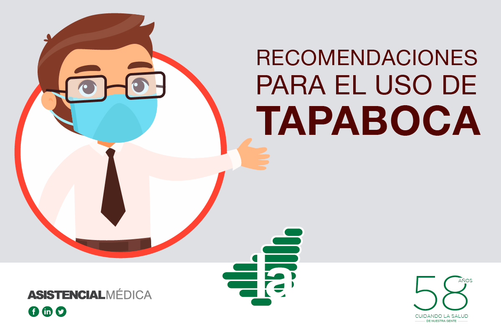

RECOMENDACIONES Y CONSEJOS PARA EL USO CORRECTO DE TAPABOCA

- Antes de ponerse tapabocas es importante lavarse las manos con agua y jabón.
- El tapabocas debe cubrir la boca y la nariz y no haber espacios entre la cara y este.
- Evitar tocar el tapabocas mientras lo usa.
- No descansar el tapabocas en cuello o cabeza.
- Es importante no tocar la parte de adelante del tapabocas al sacarlo. Sacarlo por atrás y lavarlo inmediatamente.
- Lavarse las manos después de sacarse el tapabocas.
El M.S.P. recomienda el uso de tapabocas de tela, para el uso del transporte público, compras en supermercado y farmacia o cualquier lugar donde no se pueda mantener el distanciamiento físico recomendado.
¡Juntos podemos!